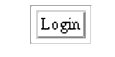

User Interface Component Model
JavaServer Faces UI components are configurable, reusable elements that compose the user interfaces of JavaServer Faces applications. A component can be simple, such as a button, or compound, such as a table, which can be composed of multiple components.
JavaServer Faces technology provides a rich, flexible component architecture that includes the following:
A set of UIComponent classes for specifying the state and behavior of UI components
A rendering model that defines how to render the components in various ways
An event and listener model that defines how to handle component events
A conversion model that defines how to register data converters onto a component
A validation model that defines how to register validators onto a component
This section briefly describes each of these pieces of the component architecture.
User Interface Component Classes
JavaServer Faces technology provides a set of UI component classes and associated behavioral interfaces that specify all the UI component functionality, such as holding component state, maintaining a reference to objects, and driving event handling and rendering for a set of standard components.
The component classes are completely extensible, allowing component writers to create their own custom components. See Chapter 13, Creating Custom UI Components for an example of a custom image map component.
All JavaServer Faces UI component classes extend UIComponentBase, which defines the default state and behavior of a UI component. The following set of UI component classes is included with JavaServer Faces technology:
UIColumn: Represents a single column of data in a UIData component.
UICommand: Represents a control that fires actions when activated.
UIData: Represents a data binding to a collection of data represented by a DataModel instance.
UIForm: Encapsulates a group of controls that submit data to the application. This component is analogous to the form tag in HTML.
UIInput: Takes data input from a user. This class is a subclass of UIOutput.
UISelectBoolean: Allows a user to set a boolean value on a control by selecting or deselecting it. This class is a subclass of UIInput.
UISelectMany: Allows a user to select multiple items from a group of items. This class is a subclass of UIInput.
UISelectOne: Allows a user to select one item from a group of items. This class is a subclass of UIInput.
In addition to extending UIComponentBase, the component classes also implement one or more behavioral interfaces, each of which defines certain behavior for a set of components whose classes implement the interface.
These behavioral interfaces are as follows:
ActionSource: Indicates that the component can fire an action event. This interface is intended for use with components based on JavaServer Faces technology 1.1_01 and earlier versions.
ActionSource2: Extends ActionSource, and therefore provides the same functionality. However, it allows components to use the unified EL when referencing methods that handle action events.
EditableValueHolder: Extends ValueHolder and specifies additional features for editable components, such as validation and emitting value-change events.
NamingContainer: Mandates that each component rooted at this component have a unique ID.
StateHolder: Denotes that a component has state that must be saved between requests.
ValueHolder: Indicates that the component maintains a local value as well as the option of accessing data in the model tier.
UICommand implements ActionSource2 and StateHolder. UIOutput and component classes that extend UIOutput implement StateHolder and ValueHolder. UIInput and component classes that extend UIInput implement EditableValueHolder, StateHolder, and ValueHolder. UIComponentBase implements StateHolder. See the JavaServer Faces Technology 1.2 API Specification for more information on these interfaces.
Only component writers will need to use the component classes and behavioral interfaces directly. Page authors and application developers will use a standard UI component by including a tag that represents it on a JSP page. Most of the components can be rendered in different ways on a page. For example, a UICommand component can be rendered as a button or a hyperlink.
The next section explains how the rendering model works and how page authors choose how to render the components by selecting the appropriate tags.
Component Rendering Model
The JavaServer Faces component architecture is designed such that the functionality of the components is defined by the component classes, whereas the component rendering can be defined by a separate renderer. This design has several benefits, including:
Component writers can define the behavior of a component once but create multiple renderers, each of which defines a different way to render the component to the same client or to different clients.
Page authors and application developers can change the appearance of a component on the page by selecting the tag that represents the appropriate combination of component and renderer.
A render kit defines how component classes map to component tags that are appropriate for a particular client. The JavaServer Faces implementation includes a standard HTML render kit for rendering to an HTML client.
The render kit defines a set of Renderer classes for each component that it supports. Each Renderer class defines a different way to render the particular component to the output defined by the render kit. For example, a UISelectOne component has three different renderers. One of them renders the component as a set of radio buttons. Another renders the component as a combo box. The third one renders the component as a list box.
Each JSP custom tag defined in the standard HTML render kit is composed of the component functionality (defined in the UIComponent class) and the rendering attributes (defined by the Renderer class). For example, the two tags in Table 10-1 represent a UICommand component rendered in two different ways.
Table 10-1 UICommand Tags
Tag |
Rendered As |
|---|---|
commandButton |
 |
commandLink |
The command part of the tags shown in Table 10-1 corresponds to the UICommand class, specifying the functionality, which is to fire an action. The button and hyperlink parts of the tags each correspond to a separate Renderer class, which defines how the component appears on the page.
The JavaServer Faces implementation provides a custom tag library for rendering components in HTML. It supports all the component tags listed in Table 10-2. To learn how to use the tags in an example, see Adding UI Components to a Page Using the HTML Component Tags.
Table 10-2 The UI Component Tags
Conversion Model
A JavaServer Faces application can optionally associate a component with server-side object data. This object is a JavaBeans component, such as a backing bean. An application gets and sets the object data for a component by calling the appropriate object properties for that component.
When a component is bound to an object, the application has two views of the component’s data:
The model view, in which data is represented as data types, such as int or long.
The presentation view, in which data is represented in a manner that can be read or modified by the user. For example, a java.util.Date might be represented as a text string in the format mm/dd/yy or as a set of three text strings.
The JavaServer Faces implementation automatically converts component data between these two views when the bean property associated with the component is of one of the types supported by the component’s data. For example, if a UISelectBoolean component is associated with a bean property of type java.lang.Boolean, the JavaServer Faces implementation will automatically convert the component’s data from String to Boolean. In addition, some component data must be bound to properties of a particular type. For example, a UISelectBoolean component must be bound to a property of type boolean or java.lang.Boolean.
Sometimes you might want to convert a component’s data to a type other than a standard type, or you might want to convert the format of the data. To facilitate this, JavaServer Faces technology allows you to register a Converter implementation on UIOutput components and components whose classes subclass UIOutput. If you register the Converter implementation on a component, the Converter implementation converts the component’s data between the two views.
You can either use the standard converters supplied with the JavaServer Faces implementation or create your own custom converter.
To create and use a custom converter in your application, three things must happen:
The application developer must implement the Converter class. See Creating a Custom Converter.
The application architect must register the Converter with the application. See Registering a Custom Converter.
The page author must refer to the Converter object from the tag of the component whose data must be converted. See Using a Custom Converter.
Event and Listener Model
The JavaServer Faces event and listener model is similar to the JavaBeans event model in that it has strongly typed event classes and listener interfaces that an application can use to handle events generated by UI components.
An Event object identifies the component that generated the event and stores information about the event. To be notified of an event, an application must provide an implementation of the Listener class and must register it on the component that generates the event. When the user activates a component, such as by clicking a button, an event is fired. This causes the JavaServer Faces implementation to invoke the listener method that processes the event.
JavaServer Faces technology supports three kinds of events: value-change events, action events, and data-model events.
An action event occurs when the user activates a component that implements ActionSource. These components include buttons and hyperlinks.
A value-change event occurs when the user changes the value of a component represented by UIInput or one of its subclasses. An example is selecting a check box, an action that results in the component’s value changing to true. The component types that can generate these types of events are the UIInput, UISelectOne, UISelectMany, and UISelectBoolean components. Value-change events are fired only if no validation errors were detected.
Depending on the value of the immediate property (see The immediate Attribute) of the component emitting the event, action events can be processed during the invoke application phase or the apply request values phase, and value-change events can be processed during the process validations phase or the apply request values phase.
A data-model event occurs when a new row of a UIData component is selected. The discussion of data-model events is an advanced topic. It is not covered in this tutorial but may be discussed in future versions of this tutorial.
There are two ways to cause your application to react to action events or value-change events emitted by a standard component:
Implement an event listener class to handle the event and register the listener on the component by nesting either a valueChangeListener tag or an actionListener tag inside the component tag.
Implement a method of a backing bean to handle the event and refer to the method with a method expression from the appropriate attribute of the component’s tag.
See Implementing an Event Listener for information on how to implement an event listener. See Registering Listeners on Components for information on how to register the listener on a component.
See Writing a Method to Handle an Action Event and Writing a Method to Handle a Value-Change Event for information on how to implement backing bean methods that handle these events.
See Referencing a Backing Bean Method for information on how to refer to the backing bean method from the component tag.
When emitting events from custom components, you must implement the appropriate Event class and manually queue the event on the component in addition to implementing an event listener class or a backing bean method that handles the event. Handling Events for Custom Components explains how to do this.
Validation Model
JavaServer Faces technology supports a mechanism for validating the local data of editable components (such as text fields). This validation occurs before the corresponding model data is updated to match the local value.
Like the conversion model, the validation model defines a set of standard classes for performing common data validation checks. The JavaServer Faces core tag library also defines a set of tags that correspond to the standard Validator implementations. See Table 11-7 for a list of all the standard validation classes and corresponding tags.
Most of the tags have a set of attributes for configuring the validator’s properties, such as the minimum and maximum allowable values for the component’s data. The page author registers the validator on a component by nesting the validator’s tag within the component’s tag.
The validation model also allows you to create your own custom validator and corresponding tag to perform custom validation. The validation model provides two ways to implement custom validation:
Implement a Validator interface that performs the validation. See Implementing the Validator Interface for more information.
Implement a backing bean method that performs the validation. See Writing a Method to Perform Validation for more information.
If you are implementing a Validator interface, you must also:
Register the Validator implementation with the application. See Registering a Custom Validator for more information.
Create a custom tag or use a validator tag to register the validator on the component. See Creating a Custom Tag for more information.
If you are implementing a backing bean method to perform validation, you also must reference the validator from the component tag’s validator attribute. See Referencing a Method That Performs Validation for more information.